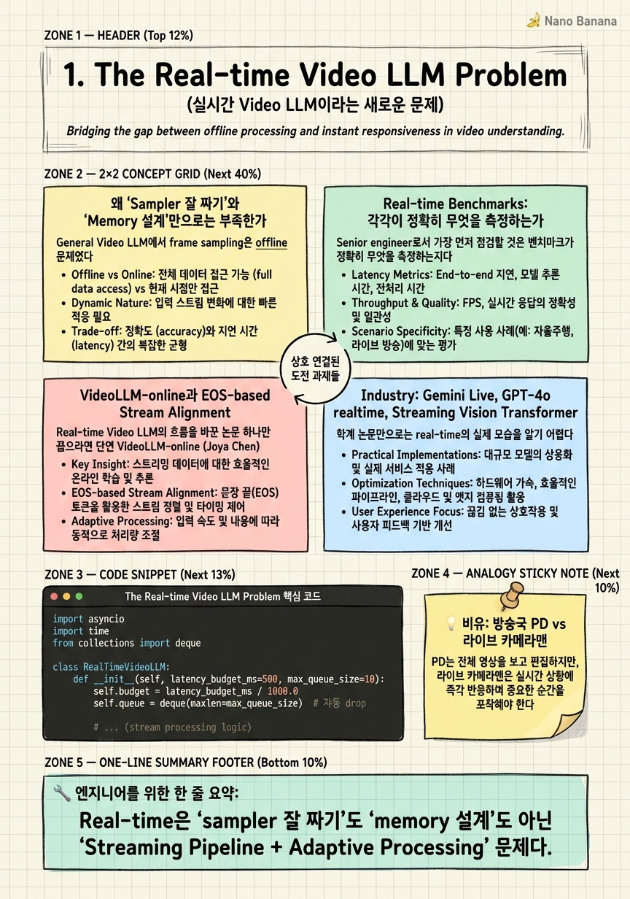

The Real-time Video LLM Problem

🎯 학습 목표
- General/Hour-scale/Real-time Video LLM의 본질적 차이를 한 문장으로 설명할 수 있다
- VStream-Bench, OVO-Bench, StreamingBench가 각각 측정하는 능력이 무엇인지 구분할 수 있다
- VideoLLM-online의 EOS-based alignment가 왜 streaming의 핵심 idea인지 설명할 수 있다
- 대화형/모니터링형/이벤트형 시나리오별 latency budget (p50/p99)을 수치로 제시할 수 있다
- 왜 단순히 좋은 sampler + 좋은 memory를 붙여도 real-time이 안 되는지 설명할 수 있다
이전 두 코스에서 우리는 video understanding의 두 가지 큰 패러다임을 봤다. General Video LLM (1-3분 짜리 짧은 비디오)에서는 '주어진 N개 프레임 중 가장 informative한 K개를 어떻게 고를까'가 핵심이었다 — AKS, BOLT, Frame-Voyager, Q-Frame, AdaRD-Key, FOCUS 같은 sampler 설계가 전부였다. Hour-scale Video LLM (수 시간짜리 비디오)에서는 '컨텍스트 윈도우는 유한한데 비디오는 무한할 때 어떻게 기억할까'가 핵심이었다 — LongVU, MovieChat, Flash-VStream, MA-LMM, MovieNet의 memory hierarchy 설계가 답이었다.
Real-time Video LLM은 이 둘 모두와 본질적으로 다른 문제다. 비디오가 '주어져 있는' 게 아니다. 비디오는 끊임없이 들어온다. 카메라가 매초 30 프레임을 토해내는 동안 LLM은 '아직 다음 프레임이 와도 되는지' 결정해야 하고, 사용자는 '지금 화면에 보이는 것에 대해' 즉각적 응답을 기대한다. 이건 더 이상 'frame selection' 문제도, 'memory compression' 문제도 아니다. 시스템 문제(systems problem)다. Producer-consumer queue, backpressure, sliding context, encoder latency, KV cache 관리가 모델 아키텍처만큼 중요해진다.
이 챕터에서는 그 mental model shift를 명시적으로 정립한다. VideoLLM-online (CVPR 2024)의 EOS-based stream alignment가 왜 단순한 트릭이 아니라 'streaming-native' 사고의 결정체인지, VStream-Bench와 OVO-Bench가 정확히 무엇을 측정하려는지, 그리고 Gemini Live나 GPT-4o realtime이 production에서 어떤 latency budget으로 동작하는지를 살펴본다.
핵심 내용
왜 'Sampler 잘 짜기'와 'Memory 설계'만으로는 부족한가
General Video LLM에서 frame sampling은 offline 문제였다. AKS는 비디오 전체를 본 다음 keyframe을 고르고, Frame-Voyager는 query를 받아 어떤 프레임이 답에 기여할지 학습한다. 이 모든 알고리즘의 공통 가정은 모든 프레임을 미리 볼 수 있다는 점이다. Causal 제약이 없다. '나중에 등장할 더 좋은 프레임'을 기다릴 수 있다.
Real-time에서는 이 가정이 무너진다. 프레임 t를 받았을 때, 우리는 프레임 t+1, t+2가 무엇일지 모른다. 동시에 사용자는 'now, 지금 무엇이 보여요?'라고 묻는다. AKS를 그대로 가져와 쓰면? 모든 프레임이 들어올 때까지 기다려야 하니 latency가 비디오 길이와 같아진다. 즉 offline sampler를 그대로 streaming에 붙이면 latency가 ∞로 발산한다.
Hour-scale memory system도 비슷한 함정이 있다. MovieChat의 short-term/long-term memory는 비디오를 chunk 단위로 끊어 미리 encoding한 다음 압축한다. 이건 비디오 길이가 정해져 있을 때만 의미가 있다. 24시간 스트리밍 카메라에 MovieChat 메모리를 그대로 적용하면 long-term memory가 단조 증가하면서 결국 컨텍스트가 터진다. Memory hierarchy를 streaming에 적용하려면 forgetting 정책이 필수고, 이건 hour-scale 논문들이 잘 다루지 않은 부분이다.
그래서 Real-time Video LLM의 mental model은 Streaming Pipeline + Adaptive Processing으로 시프트해야 한다. '어떤 프레임을 고를까'가 아니라 '들어오는 스트림을 어떤 paced rate로 consume하고, 어떤 budget 안에 답을 내놓을까'다.
Real-time Benchmarks: 각각이 정확히 무엇을 측정하는가
Senior engineer로서 가장 먼저 점검할 것은 벤치마크가 정확히 무엇을 측정하는지다. Real-time을 표방한 벤치마크가 여럿 있지만 측정 능력이 미묘하게 다르다.
VStream-Bench (Flash-VStream 논문, NeurIPS 2024): streaming video QA를 측정한다. 비디오의 각 시점 t_i에서 질문이 들어오고, 모델은 t_i까지 본 정보만으로 답해야 한다. 즉 memory persistence (과거 정보를 얼마나 잘 유지하는가)와 causal reasoning을 평가한다. 정확도뿐만 아니라 frame-by-frame inference time도 측정한다.
OVO-Bench (Online Video Understanding, 2024): 'online' 시나리오를 더 명시적으로 다룬다. Backward (과거 회상), Realtime (현재 인식), Forward (proactive prediction) 세 가지 능력을 분리해 측정한다. 핵심 통찰: real-time 능력은 단일 스코어가 아니라 다축 스코어다.
StreamingBench (2024): proactive response 능력을 측정한다. '뭔가 일어났을 때 모델이 먼저 말할 수 있는가?' 사용자가 묻기 전에 시스템이 알람을 띄울 수 있는지. 이건 monitoring/safety 시나리오의 핵심이다.
ETBench (Event-level Temporal Understanding): 이벤트 boundary를 얼마나 정확히 잡는지 측정한다. 'when did X happen?'에 답할 수 있는 능력.
시니어가 흔히 하는 실수: 'Flash-VStream이 VStream-Bench에서 SOTA니까 우리 시스템에 좋을 거야'라고 결론짓는 것. 실제 production이 monitoring 시나리오라면 StreamingBench 점수가 더 중요할 수 있다. 벤치마크와 시나리오를 매칭하는 능력이 평가의 시작이다.
VideoLLM-online과 EOS-based Stream Alignment
Real-time Video LLM의 흐름을 바꾼 논문 하나만 꼽으라면 단연 VideoLLM-online (Joya Chen et al., CVPR 2024)다. 이 논문의 핵심 기여는 모델 아키텍처가 아니라 학습 objective의 재정의다.
기존 video LLM은 'video → response'를 학습한다. 즉 비디오 전체를 입력으로 받고 한 번의 response를 생성한다. VideoLLM-online은 이걸 streaming에 맞게 재정의한다: 매 프레임이 들어올 때마다 모델은 '지금 답할까 (response token), 아니면 더 기다릴까 (EOS-like silence token)'를 결정한다. 이게 바로 EOS-based stream alignment다.
구체적으로, 학습 데이터에서 narration이 등장하는 시점은 'speak' 라벨이 붙고, 그 외 시점은 'silence' (EOS와 유사한 토큰) 라벨이 붙는다. 추론 시 모델은 매 프레임마다 다음 토큰을 sampling한다 — silence가 나오면 다음 프레임을 기다리고, 일반 토큰이 나오면 그때부터 응답을 시작한다.
왜 이게 중요한가? 기존 video LLM은 '언제 응답해야 하는지'에 대한 모델링이 없다. 사용자가 명시적으로 물어야 답한다. 그래서 proactive response (시스템이 먼저 말함)가 불가능했다. VideoLLM-online은 이걸 next-token prediction 안에 자연스럽게 녹여낸다. EOS 토큰이 'I have nothing to say yet'을 의미하도록 재해석한 것이다.
Micro-design decision으로 읽어야 할 부분은 왜 별도 trigger network를 두지 않고 LM head 안에 통합했는가다. 별도 trigger를 두면 두 모듈 사이 동기화 문제가 생기고 backprop이 갈라진다. 같은 헤드 안에 통합하면 모델이 'context'와 'timing'을 jointly 학습한다. 이건 streaming-native 모델 설계의 표준이 됐다.
Industry: Gemini Live, GPT-4o realtime, Streaming Vision Transformer
학계 논문만으로는 real-time의 실제 모습을 알기 어렵다. Gemini Live와 GPT-4o realtime은 production-grade real-time video LLM의 현주소다.
Gemini Live (2024)는 카메라 입력을 받아 실시간 대화한다. 공개된 아키텍처 디테일은 제한적이지만, 알려진 사실은 (1) 비디오를 1-2 FPS로 downsample, (2) 음성 stream과 video stream을 별도 채널로 multiplex, (3) end-to-end latency target은 700ms 수준 (사람과의 자연스러운 turn-taking을 위한 임계점). 학계 SOTA인 VideoLLM-online이 ~300ms throughput을 목표한다면, production은 user-perceived latency를 최우선한다는 점이 다르다.
GPT-4o realtime (2024): WebSocket API로 노출된다. 이건 음성+비전 multi-modal streaming의 production blueprint다. 핵심 디자인: (1) partial response streaming (모델이 첫 토큰부터 즉시 흘려보냄), (2) interruption handling (사용자가 끼어들면 generation을 중단), (3) VAD (Voice Activity Detection) integration으로 사용자 말이 끝났음을 빠르게 감지. 비디오 측에서는 client-side encoder를 두어 raw frame이 아닌 embedding을 전송하는 패턴도 보인다.
Streaming Vision Transformer (Liang et al., 2023): cross-frame attention을 streaming-friendly하게 재설계한 archi. 핵심은 매 프레임을 독립 encoding하지 않고 state-carrying transformer처럼 동작시킨다는 점이다. 즉 frame t의 attention이 frame t-1의 KV를 reuse한다. 이건 KV cache 패턴을 vision encoder에 적용한 좋은 예시다.
이 시스템들에서 공통적으로 보이는 패턴: 모델 아키텍처보다 데이터 흐름이 더 중요하다. Frame을 어떻게 enqueue/dequeue하는가, encoder와 LLM을 어떻게 pipeline parallel로 돌리는가, 첫 토큰이 나오기까지 (TTFT) 무엇이 critical path인가 — 이것들이 production real-time의 진짜 문제다.
Latency Targets: 시나리오별 budget
Real-time이라는 단어를 마치 한 가지 의미인 것처럼 쓰는 건 시니어가 가장 자주 잡아내는 사고의 헐거움이다. 시나리오별로 latency budget이 크게 다르다.
대화형 (Conversational): 사용자가 화면을 보면서 모델과 대화. End-to-end latency target은 <500ms (p50), <1000ms (p99). 700ms를 넘으면 자연스러운 turn-taking이 깨진다 (인간 대화의 conversational gap은 평균 200ms 정도). TTFT (Time To First Token)가 특히 중요 — 첫 토큰이 200ms 안에 나오면 사용자는 '빠르다'고 느낀다.
모니터링 (Monitoring): CCTV, 보안, 산업 모니터링. <100ms p99 latency가 일반적이다. 사고 발생 시 1초 안에 알람이 떠야 하는데, 시스템 알람 → 사람 인지 → 행동까지 고려하면 모델 추론은 100ms 안에 끝나야 한다. FPS 요구사항도 더 엄격하다 (보통 10-30 FPS).
이벤트형 (Event-driven / Alerting): 특정 이벤트가 일어날 때만 응답. Latency보다 precision/recall과 throughput이 중요. 24시간 운영 시 false positive가 분당 0.1개를 넘으면 operator가 무시하기 시작한다. 모델 latency는 1-5초까지 허용되는 경우가 많다.
시니어 평가 시그널: 후보자에게 'real-time video LLM 시스템을 설계하라'고 했을 때 '어떤 시나리오인가?'를 먼저 묻는지 보면 된다. Latency budget 없이 아키텍처를 그리기 시작하면 그건 어디서 본 그림을 옮기는 것뿐이다.
💡 비유로 이해하기
General Video LLM은 영화 편집실의 편집자에 가깝다. 촬영본 전체를 받아놓고 '어떤 컷을 살릴까'를 고민한다. 모든 footage가 손에 있고, 되감을 수 있고, 다시 볼 수 있다. Hour-scale Video LLM은 다큐멘터리 작가다. 100시간 분량의 raw footage를 어떻게 압축해 카드에 정리할지, 어떤 노트는 즉시 버리고 어떤 노트는 평생 보관할지를 설계한다.
Real-time Video LLM은 라이브 방송의 PD다. 카메라가 지금 이 순간을 찍고 있고, 1초 후 무슨 장면이 들어올지 모른다. 시청자는 지연 없는 화면을 기대하고, 광고 들어갈 타이밍은 정해져 있고, MC가 말실수하면 즉시 자막으로 정정해야 한다. PD는 '편집자처럼 다 보고 결정'할 수 없다. '작가처럼 모두 정리'할 시간도 없다. 들어오는 데이터를 정해진 budget 안에 처리하고, 못 따라가는 정보는 과감히 버린다.
이 비유에서 흥미로운 건 '버리는 결정'이 PD의 최고 스킬이라는 점이다. Real-time 시스템도 마찬가지다. 'frame을 dropping하면 안 된다'는 강박을 가진 엔지니어는 real-time 시스템을 못 만든다. 드롭은 design의 일부다.
💻 코드 예시
Real-time Video LLM의 가장 단순한 형태 — frame stream을 받아 latency budget 안에 process하고, 못 따라가면 drop하는 패턴. 실제 production에서는 더 복잡하지만 이 구조가 모든 streaming pipeline의 뼈대다.
import asyncio
import time
from collections import deque
class RealTimeVideoLLM:
def __init__(self, latency_budget_ms=500, max_queue_size=10):
self.budget = latency_budget_ms / 1000.0
self.queue = deque(maxlen=max_queue_size) # 자동 drop
self.dropped = 0
self.processed = 0
async def producer(self, camera_stream):
async for frame, ts in camera_stream: # 30 FPS 카메라
if len(self.queue) == self.queue.maxlen:
self.dropped += 1 # backpressure: oldest frame drop
self.queue.append((frame, ts))
await asyncio.sleep(0) # cooperate
async def consumer(self, model):
while True:
if not self.queue:
await asyncio.sleep(0.001)
continue
frame, capture_ts = self.queue.popleft()
age = time.time() - capture_ts
if age > self.budget:
self.dropped += 1 # stale frame drop
continue
start = time.time()
response = await model.infer(frame) # encoder + LLM
elapsed = time.time() - start
self.processed += 1
if elapsed > self.budget:
# SLO violation: log and continue
print(f'p99 budget violated: {elapsed*1000:.0f}ms')
yield response, capture_ts핵심은 세 가지 drop 메커니즘이다. (1) deque(maxlen=...)로 queue overflow 시 oldest를 자동 drop — backpressure의 가장 단순한 형태. (2) age > budget 체크로 stale frame을 process하지 않음 — 이미 늦었으면 답해도 의미 없다. (3) elapsed > budget은 inference 자체가 SLO를 깬 경우 — 알람과 메트릭으로 잡아낸다. 시니어가 이 코드에서 즉시 지적할 부분: model.infer가 single-frame이지만 실제로는 sliding window context를 함께 전달해야 한다 (다음 챕터들의 주제).
🏭 현업에서의 평가
✅ 시니어가 보는 것
- Latency budget을 시나리오별로 정량화 — '500ms 정도?'가 아니라 'TTFT p50 200ms, end-to-end p99 800ms'처럼 명시
- Offline frame sampling 알고리즘을 streaming에 그대로 못 붙이는 이유를 즉시 설명 (causal 제약)
- 벤치마크별 측정 능력 구분 — VStream-Bench의 memory persistence vs StreamingBench의 proactive response
- VideoLLM-online의 EOS alignment 같은 micro-design을 'why this matters' 관점에서 해석
- 'drop'을 design의 일부로 받아들이는 태도 — 모든 프레임을 처리해야 한다는 강박이 없음
⚠️ 레드 플래그
- 'real-time'을 단일 정의로 사용 — 시나리오 구분 없음
- AKS, BOLT 같은 offline sampler를 real-time에 그대로 쓰겠다고 답함
- Latency target을 묻지 않고 바로 모델 아키텍처부터 그림
- Frame drop을 'bug'로 인식 — 모든 프레임을 처리해야 한다고 고집
🎤 예상 인터뷰 질문
- VideoLLM-online이 EOS token으로 streaming을 해결한 방식을 설명하라. 왜 별도 trigger module을 두지 않았는가?
- VStream-Bench와 OVO-Bench 둘 다 SOTA인 모델 A와, OVO-Bench만 SOTA인 모델 B가 있다. 보안 모니터링 시스템에 어떤 걸 선택할 것이며, 그 결정에 추가로 어떤 측정이 필요한가?
- 30 FPS 카메라에서 들어오는 비디오에 대해 GPT-4o realtime 수준의 응답성을 내고 싶다. 어떤 latency를 측정할 것이며, p50/p99 target은 얼마로 잡을 것인가?
✨ 핵심 요약
Mental Model Shift
Real-time은 'sampler 잘 짜기'도 'memory 설계'도 아닌 '**Streaming Pipeline + Adaptive Processing**' 문제다.
Causal 제약이 모든 것을 바꾼다
Offline sampler를 그대로 streaming에 못 붙인다 — 미래 프레임을 기다릴 수 없다.
벤치마크는 능력별로 분리됨
VStream-Bench (memory persistence), OVO-Bench (backward/realtime/forward), StreamingBench (proactive)는 서로 다른 능력을 잰다.
EOS Alignment의 의미
VideoLLM-online의 핵심은 next-token prediction 안에 '언제 말할지'를 자연스럽게 통합한 것이다.
Latency는 시나리오별 정량화
대화형 <500ms p50, 모니터링 <100ms p99, 이벤트형은 throughput과 precision이 우선.
Production은 TTFT가 핵심
Gemini Live, GPT-4o realtime 모두 first-token latency를 user-perceived latency의 proxy로 본다.
Drop은 design의 일부
Frame을 버리지 않으려는 강박은 real-time 시스템 설계의 가장 큰 적이다.
시스템 문제로의 전환
모델 아키텍처보다 데이터 흐름 (queue, backpressure, pipeline parallelism)이 latency를 결정한다.